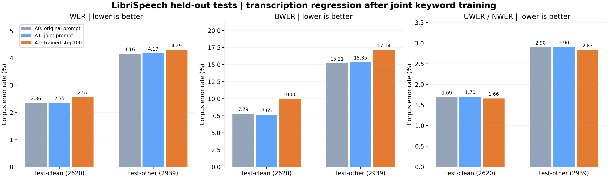

LibriSpeech 转写 + <KEYWORDS>：最终结果
训练100/100成功 · checkpoint100导出成功 · 评估11,690/11,690成功并核验 · GPU已释放
模型学会了输出关键词列表，但本次100步训练未改善正式测试集的转写准确率。test-clean / test-other 的 WER、BWER 均高于 A0 和 A1；非关键词 UWER 略有改善。关键词列表 micro precision 仅为33.08%–48.27%，空关键词样本的误报率为92.73%–98.46%，说明格式学习成功，但关键词选择仍明显过量。
训练模型的转写指标
| 数据集 | 条数 | WER | BWER | UWER / NWER |
|---|
| internal-test | 6131 | 1.937% | 8.995% | 1.134% |
| test-clean | 2620 | 2.573% | 9.998% | 1.660% |
| test-other | 2939 | 4.295% | 17.140% | 2.832% |
关键词列表指标
| 数据集 | micro P | micro R | micro F1 | exact | format | 空目标误报率 |
|---|
| internal-test | 48.271% | 62.763% | 54.571% | 4.045% | 96.412% | 98.462% |
| test-clean | 38.222% | 63.141% | 47.618% | 6.756% | 94.885% | 94.219% |
| test-other | 33.084% | 60.575% | 42.795% | 6.465% | 93.297% | 92.732% |
列表P/R/F1为micro；exact/format为逐条成功比例。空目标误报率仅以参考关键词为空的样本为分母。
与同一基座的官方测试比较

| 数据集 | 模型 | WER | BWER | UWER / NWER |
|---|
| test-clean | A0 原始提示 | 2.358% | 7.794% | 1.690% |
| test-clean | A1 联合提示 | 2.353% | 7.655% | 1.700% |
| test-clean | A2 训练100步 | 2.573% | 9.998% | 1.660% |
| test-other | A0 原始提示 | 4.157% | 15.215% | 2.898% |
| test-other | A1 联合提示 | 4.174% | 15.346% | 2.903% |
| test-other | A2 训练100步 | 4.295% | 17.140% | 2.832% |
A0：原始提示；A1：联合提示；A2：训练checkpoint100。A1没有输出关键词块，列表recall/F1/exact/format为0，precision未定义。internal-test没有已有匹配基线，因此不声称相对改善。
选择与核验
仅按固定dev1000的最小corpus WER选择checkpoint100，测试未参与选择。全部11,690条输出ID全局唯一，与manifest的ID/参考/关键词/来源哈希匹配；每条错误统计分区成立。独立评估JSONL的step=0不代表未训练模型。
训练dev来自未训练模型的最容易1000条，筛选时WER/BWER为0；不能用该dev结果声称超过基座。训练reward包含每组1条GT，验证与测试不注入GT。关键词列表格式学习成功，转写WER和BWER退化；应优先检查误报与空目标处理后再设计下一轮实验。
完整报告与来源 · 全部指标CSV · 指标JSON · 输出核验 · 比较图PDF · 训练和validation图表